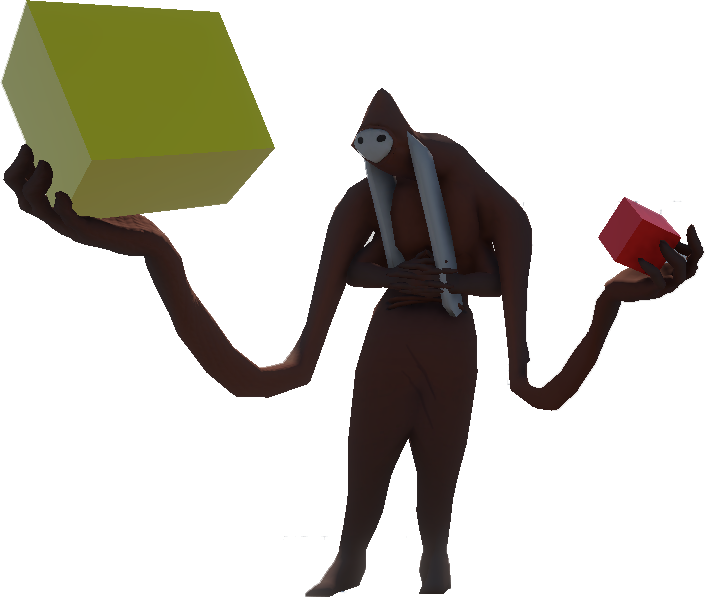

Smaller or unfinished projects. Anything really.
One of my all time favorite games is Rabbids Go Home for the Wii. This was my quick attempt at recreating some of the main movement mechanics. Rail-grinding was something that is not present in the original game that I added.
I would love to push this project further in the future. Some feature I would still like to replicate is the object collection (which I have worked on a bit).
This VR hand prototype taught me many things about object detection and what good VR interaction feels like.
I am going to push this project further in the future, adding haptics, physics interactions, and more consistent finger animations. This was heavily inspired by the Auto Hand package on the Unity Asset Store.
The summer after I completed Linn Falls, I recreated some of the mechanics and the water sytem in a VR environment. The water is showcased on the Linn Falls page.
I enjoy creating smooth VR interaction and have a few projects just to mess around with various hands, objects, and weapons from time to time.
This was an idea I had about a game mixing 2D platforming in a VR space. I still frequent this idea often but have never fully dove into the project.
The idea of mixing game genres is something you will see a few times in my portfolio, and definitely more in the future.